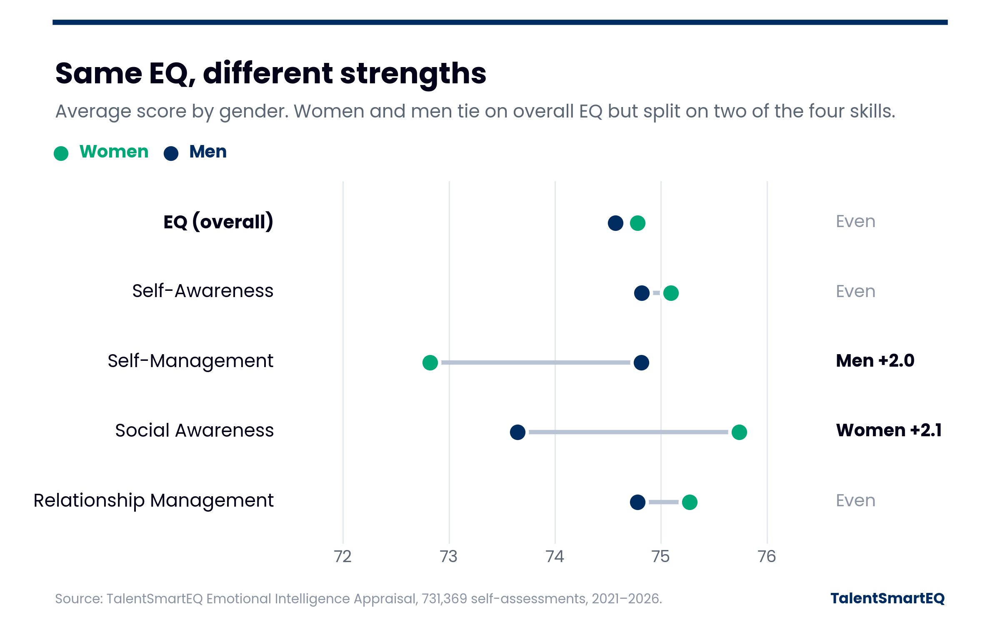

TalentSmartEQ Research
EQ & Gender

What our data shows
Women and men rate their overall emotional intelligence almost identically (74.8 vs. 74.6), a difference of essentially zero. The differences show up in two skills: men rate themselves about 2 points higher in Self-Management, and women about 2 points higher in Social Awareness. Self-Awareness and Relationship Management are within about half a point.
What the broader research says
Emotional intelligence can be measured in different ways. In a self-assessment, like ours, people rate how often they show certain behaviors, such as staying calm under pressure or noticing how others feel. In an ability test, people have to show the skill, for example by identifying the emotion in a photo of a face or picking the best way to handle a tense situation, and their answers are scored right or wrong.
A 2026 meta-analysis in Emotion, covering 28 years of studies and more than 600,000 participants, found that this choice matters. On self-assessments, women and men score nearly the same. On ability tests, women score noticeably higher, with an advantage nearly 4x larger. Women’s edge was largest in skills aimed at other people, such as reading and responding to others’ emotions. This matches our findings that women score higher in Social Awareness. Men showed only a very slight edge in managing their own emotions (Self-Management), which disappeared on ability tests. The gaps in this study varied by leadership position, industry, region, and the year the data was collected.
What it means
Our self-assessment data follows the same pattern the research predicts. Because it reflects self-ratings, it likely understates any true differences in ability. Either way, gender tells you little about any one person’s EQ. The best starting point is still each person’s own lowest skill, not a group average.
Source: 731,369 Emotional Intelligence Appraisal self-assessments, 2021–2026. Gender comparisons use the 689,586 from people who identified as a woman or a man. Scores are self-ratings on a 0–100 scale.
Hausfeld, M. M., Hampel, V., Bach, L. J., & Menges, J. I. (2026). Putting assumptions to the test: A meta-analytic review of gender differences in emotional intelligence and specific emotion abilities. Emotion. https://doi.org/10.1037/emo0001733
Copyright 2026 © TalentSmart Inc. All rights reserved.